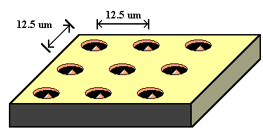
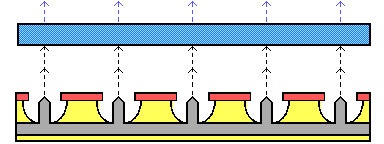
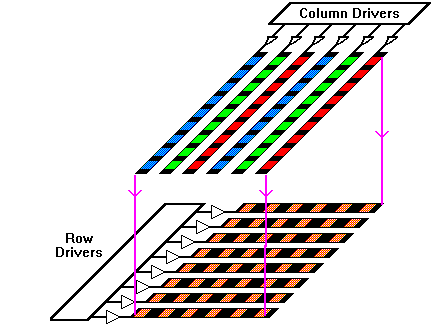
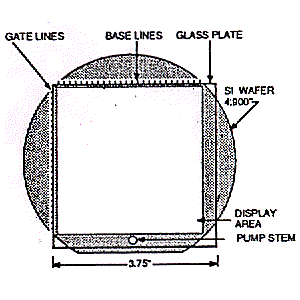
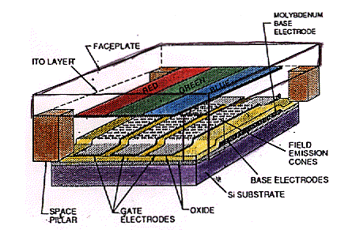
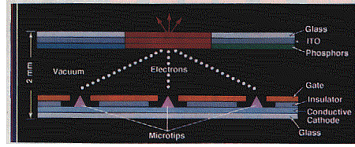
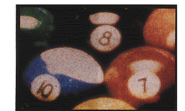
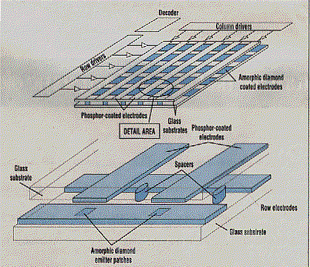
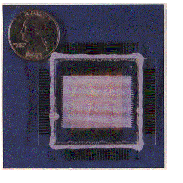
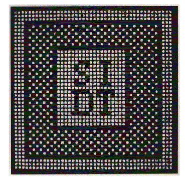

- 1. Field Emitter Array (FEA) #12

- a. D. Temple/H. Gray Group (MCNC and Naval Research Lab)
- b. Regular Matrix of Pyramids (4 - 13 um spacing)
- c. 232,630 tips on 4-in Si wafer (3E+6 tips/cm^2)
- d. Many simultaneous electron beams
- e. Jan 1995, maximum of 18 mA for 6648 tip array
- 2. Illuminating the Phosphors

- a. 100's to 1000's of tips behind each phosphor
- b. Simultaneous beams illuminate phosphor
- c. Even if some tips broken, still works
- 3. Simple row-column matrix addressing

- a. can turn on single element by accessing given row/column
- b. no active matrix necessary
- 1. Charles Spindt Prototype (SRI International) #10
- a. FEA on 4.9" Si wafer baseplate

- b. Address line contacts on sides
- c. 338 X 338 pixel array
- d. 4 mm thick in total

- e. 100 tips per color element (redundancy)
- f. 3 elements: R, G, B per pixel
- g. 250 um square pixel size
- h. 50 - 150 Volt Pixel Driving Range
- i. Base: metal strips (175 um wide, 250 um centers)
- j. Base: orthogonal gate films (40 um wide, 66 um centers)
- k. Clear conducting indium tin oxide (ITO) on screen
- l. ITO has RGB strips over gate film strips
- m. Pillars: 50 X 50 X 75 um
- n. Inner tube evacuated: 10^-9 Torr (turbomolecular pump)
- 2. Micron Display Technology, Inc.'s Prototype #1
- a. Like AMLCD, uses GLASS substrate

- b. 0.7 Inch Diagonal Screen Size
- c. 700 pixels/inch (Monochrome/Color models)

- d. Completely sealed
- e. Own built-in driver chips
- 1. Patches of Diamond Films Instead of Pyramids

- 2. Similar matrix addressing and phosphor screen
- 1. 1 square inch monochrone display #5
 
- 2. 48 X 48 and 125 X 125 pixel models (50, 125 lines/inch)
- 3. 350 um wide address lines, pitch size 500 um
- 4. +/- 200 to 300 Volt driving pixels
- 5. Soda-lime glass plate substrate
- 6. Diamond films on chromium lines (rows)
- 7. ZnO powder phosphors on ITO lines on screen (cols)
- 8. 25 um high nickel spacers btw base/screen
- 9. Sealed with Torrseal epoxy
- 10. Evacuated with activated getter pump
- 11. Minimum feature size 100 um (1 um for AMLCD)
Main Outline
IV. Microfabricating FED's
Sources